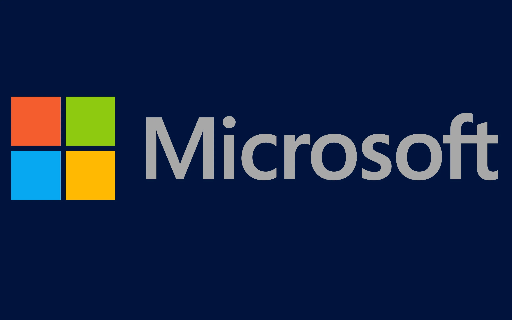
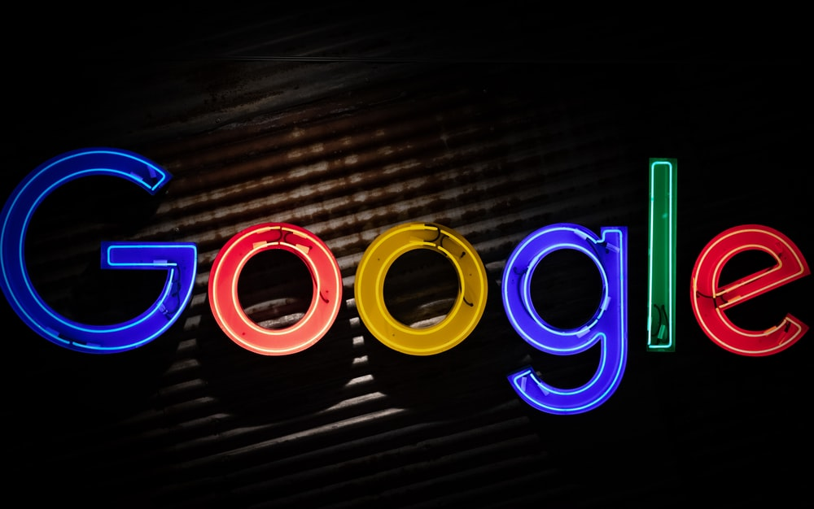

Documento Introductorio
Documento PDF
Microsoft
Empresa de Tecnología

Es una compañía creada por los empresarios Bill Gates y Paul Allen, que comercializa programas informáticos y los dispositivos para ejecutarlos, dándole múltiples soluciones a empresarios, oficinistas, estudiantes y a usuarios en general. Esta empresa multinacional diseña, produce, otorga licencia y distribuye los equipos que manufacturan.
Compañía de Servicios - Motor de busqueda

Google es una empresa multinacional estadounidense especializada en servicios y productos relacionados con software, Internet, dispositivos electrónicos y otras tecnologías. La empresa fue fundada por Larry Page y Sergey Brin.
Samsung
Conglomerado de Empresas en Tecnología

Conglomerado de empresas multinacionales con sede en Seúl, Corea del Sur. Se trata del mayor grupo empresarial surcoreano, con numerosas filiales que abarcan negocios como la electrónica de consumo, tecnología, finanzas, aseguradoras, construcción, biotecnología y sector servicios.